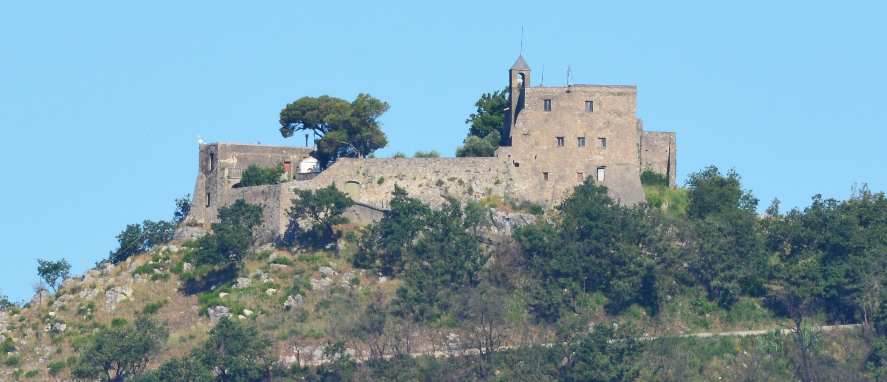

📍 Comune Castel San Giorgio
📅 Epoca Medioevale
🏛️ Tipologia Eremo / Monumento
⭐ Carattere Panoramico
Descrizione Storica
Eremo situato in posizione panoramica, offre un legame tra natura e spiritualità medievale, con viste spettacolari sulla valle.
Questo luogo rappresenta la fusione perfetta tra il patrimonio religioso e la bellezza naturale, caratterizzato da una serenità contemplativa unica.
📸 Galleria
ℹ️ Info Pratiche
Ubicazione: Posizione elevata a Castel San Giorgio con accesso panoramico.
Caratteristiche: Luogo di contemplazione, natura incontaminata, spiritualità medievale.